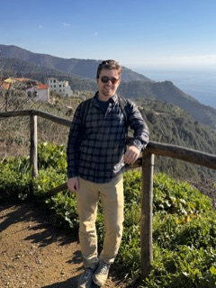

I build robots that work where it's hard to send people.

I build comms and perception for defense robotics at Applied Intuition, tested on 50 vessels on the water. Before that I was employee #5 on Ocean Power Technologies' WAM-V team and deployed boats to Bahrain and Alaska.